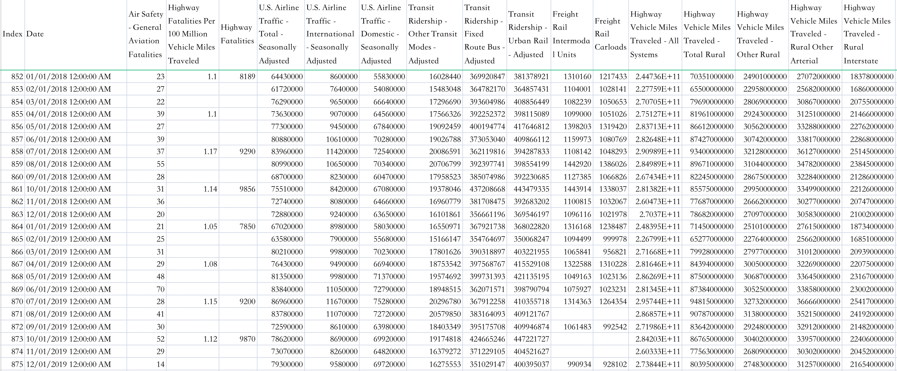
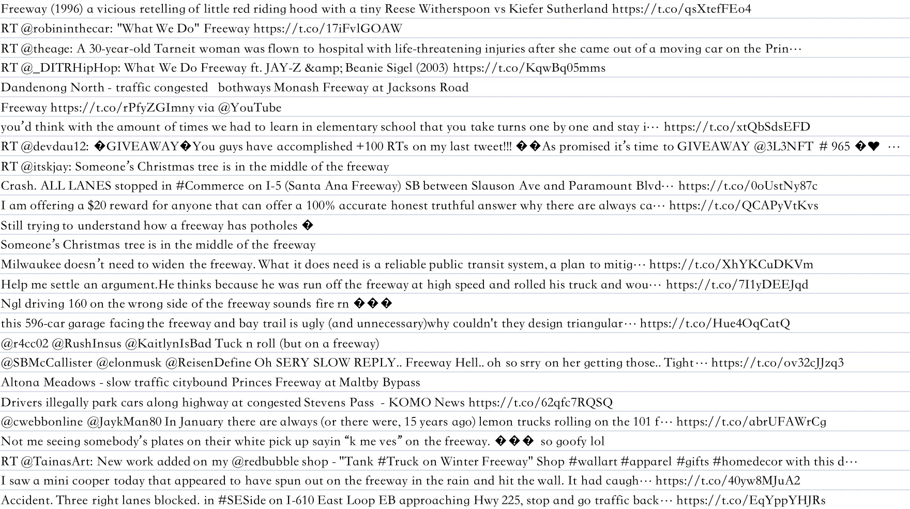
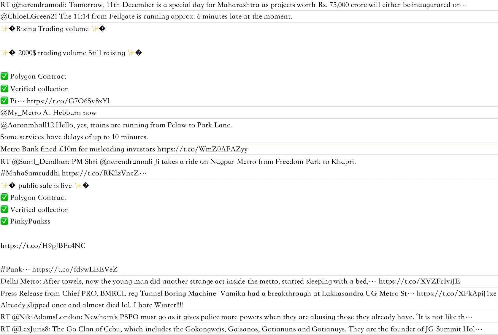
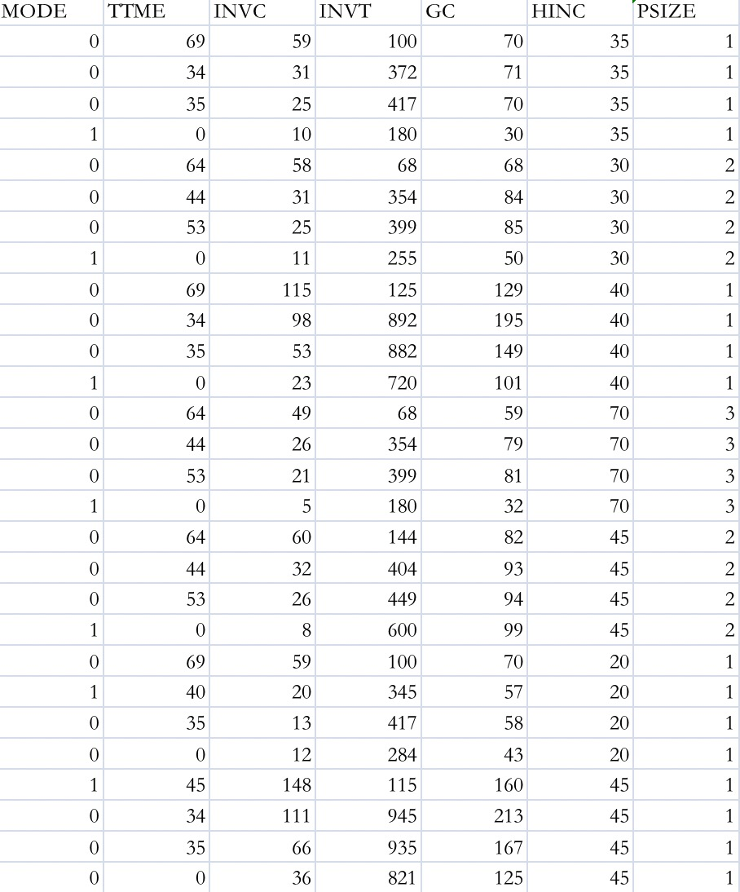
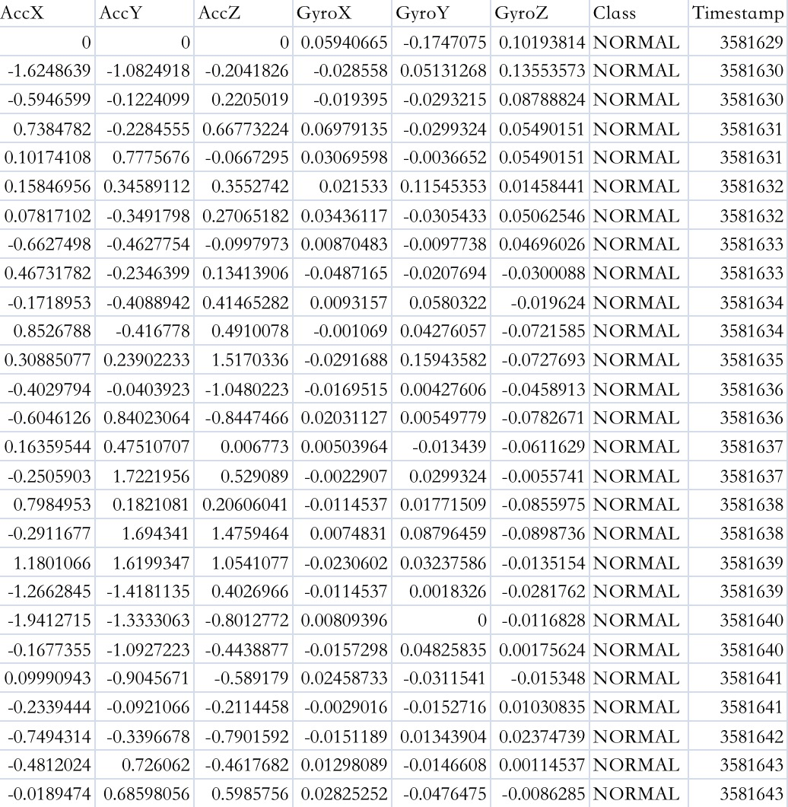
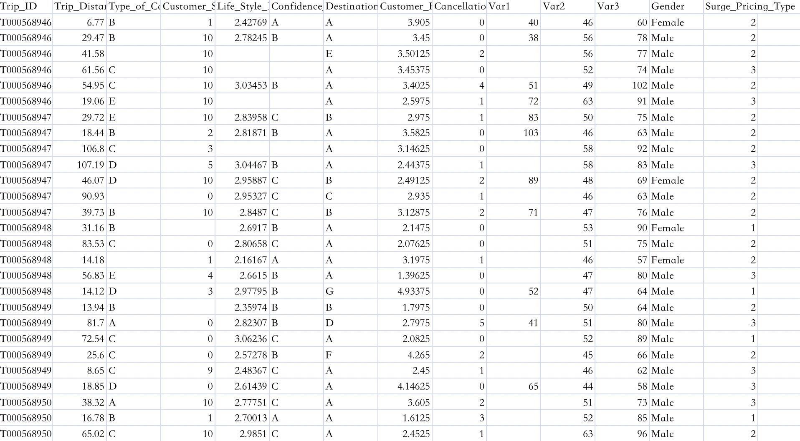

Data Gathering
Data Gathering
Introduction of data gathering
Data gathering is known as the process to collect and analyze data from various sources in order to find answers to data science problems. In this page, I will introduce the whole process of gathering valuable data for this project, ranging from the raw data source to basic images that illustrates these datasets.
Transportation is a relatively big and abstract topic. In order to answer the data science questions about this topic, I need to find different kinds of datasets. The first dimension is different types of data. To be specific, there are many different types of datasets, including labeled data, qualitative data, quantitative data, temporal data, text data, Geo data, etc. This study will cover three different types: record data, text data and temporal data. The second dimension is different scales of data. It is known to all, transportation is so important that it not only influences the life of every single person, but plays a big role in a country’s macro-economy as well. Therefore, to systematically understanding the role of transportation, it is appropriate to use both “big scale data” about economy and government and “small scale data” about citizens and everyday life at the same time.
Data gathering process
1. US Monthly Transportation Statistics
The data is downloaded from Kaggle and is originally from the U.S. Department of Transportation Bureau of Transportation Statistics. The Bureau of Transportation Statistics brings together the latest data from across the Federal government and transportation industry. This table contains mainly quantitative data and temporal data. There are many columns involving important data for the project, such as Highway Vehicle Miles Traveled, State and Local Government Construction Spending. Obviously, this is a typical “big scale data” defined above. Here’s a screenshot of this table.

From this screenshot of the data, we can easily find that every row represent a single day while every column contains different variables of record data related to transportation of the whole nation.
Link to download this data:
https://www.kaggle.com/datasets/thaddeussegura/us-monthly-transportation-statistics/download?datasetVersionNumber=1
2. Text data from Twitter API
I use Twitter API to respectively acquire searching results of “freeway” and “metro”. This is obviously text data and it contains users’ text documents in their tweets.
Tweets about “freeway” is as follows:

Tweets about “metro” is as follows:

According to these two screenshots, we can see that the data contains many characters that are difficult to process, like emojis. Thus, in further analysis of this data, I will first drop out the unwanted characters and also do some other data cleaning process for this text data.
You can find this data in my Github repository:
https://github.com/anly501/anly-501-project-WilliamChuFCB/tree/main/data
This data mentioned above is named “tweet_freeway.csv” and “tweet_metro.csv” respectively.
Also, you can access to my code that utilizes API to acquire the data:
https://github.com/anly501/anly-501-project-WilliamChuFCB/tree/main/code
Relevant codes are located in “Data gathering” file.
3. Travel mode choice data
This dataset comes from statsmodels.org. It contains information of passengers’ different choice of travel mode.
The meanings of variables are as follows:
TTME - terminal waiting time
INVC - in vehicle cost for all stages
INVT - travel time (in-vehicle time) for all stages
GC - generalized cost measure:invc+(invt*value of travel time savings)
HINC - household income
PSIZE - traveling group size

From this screenshot, we can see that this data is a typical record data for classificaiton. In further analysis process, it is proper to utilize a series of different types of machine learning algorithms to do the classification.
You can find the data here:
https://www.statsmodels.org/dev/datasets/generated/modechoice.html
4. Driving behavior data
This is a kaggle dataset about driving behavior. Aggressive driving behavior is the leading factor of road traffic accidents. Aggressive driving includes speeding, sudden breaks and sudden left or right turns. All these events are reflected on accelerometer and gyroscope data. This dataset contains value at different directions of accelerometer and gyroscope.

Obviously, this is also a record data ideal for classification. The target variable “Class” has three different categories: Normal, Aggressive and Slow. It is possible to train a classification model to predict the driving behavior type based on accelerometer and gyroscope data.
You can find this data here:
https://www.kaggle.com/datasets/outofskills/driving-behavior?select=train_motion_data.csv
5. Taxi price data
This is a kaggle data about taxi price and is originally provided by an Indian cab aggregator service Sigma Cabs. This data is ideal for building a predictive model, which could help predict the surgepricingtype pro-actively. This would in turn match the right cabs with the right customers quickly and efficiently.
The meanings of different variables are as follows:
- Trip_ID: ID for TRIP
- Trip_Distance: The distance for the trip requested by the customer
- TypeofCab: Category of the cab requested by the customer
- CustomerSinceMonths: Customer using cab services since n months; 0 month means current month
- LifeStyleIndex: Proprietary index created by Sigma Cabs showing lifestyle of the customer based on their behaviour
- ConfidenceLifeStyle_Index: Category showing confidence on the index mentioned above
- Destination_Type: Sigma Cabs divides any destination in one of the 14 categories.
- Customer_Rating: Average of life time ratings of the customer till date
- CancellationLast1Month: Number of trips cancelled by the customer in last 1 month
- Var1, Var2 and Var3: Continuous variables masked by the company. Can be used for modelling purposes
- Gender: Gender of the customer
- SurgePricingType: Target (can be of 3 types)

From this screenshot, we can see that there exist many missing values. Data cleaning and dealing with those missing values must be taken into consideration.
You can find this data here:
https://www.kaggle.com/datasets/arashnic/taxi-pricing-with-mobility-analytics?select=sigma_cabs.csv